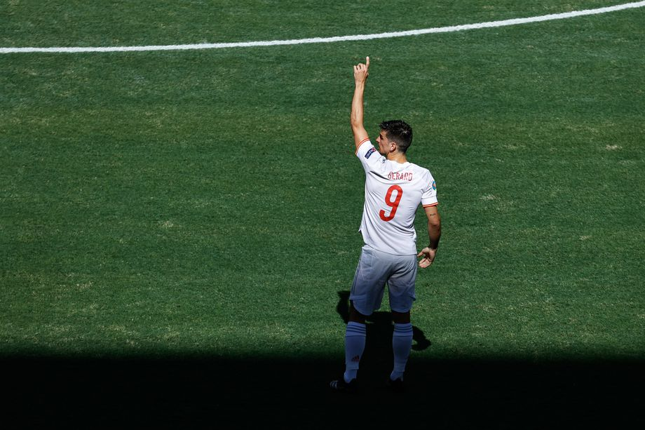
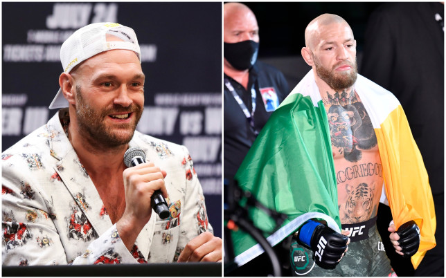

Billionaires part ways as Buffett leaves Gates post
Warren Buffett has been making annual contributions to five charitable foundations since 2006
as part of a plan to distribute about 99 percent of his net worth to philanthropy.
'For years I have been a trustee' »
Actor Drake Bell Pleads Guilty In Ohio Child Endangerment Case, Sentencing Set For July
Drake Bell, who played Drake in the Nickelodeon series Drake & Josh, pleaded guilty via Zoom on Wednesday to a felony charge of attempting to
endanger children and a misdemeanor charge of disseminating material harmful to juveniles stemming from a 2017 incident in Ohio involving a teenage girl.
Sentencing was set for July 12. Bell, who appeared virtually at today’s pretrial hearing in Cuyahoga County Common Pleas Court under his legal name Jared Bell,
gave brief answers to a short series of questions, entering guilty pleas to one count of attempted child endangering (a 4th-degree felony) and disseminating
matter harmful to juveniles (a 1st-degree misdemeanor).
Sport
Slovakia 0-5 Spain: What we learned
Spain’s Euro 2020 campaign finally got going yesterday, as a 5-0 win against Slovakia secured
Luis Enrique’s side a spot in the last-16. It looked like it might be another frustrating
afternoon for La Roja when Alvaro Morata missed an early first half penalty, but a bizarre
Martin Dubravka own goal sparked them into life, before goals from Aymeric Laporte,
Pablo Sarabia, Ferran Torres and another own goal completed a convincing win.

The shine was taken off a little by events elsewhere; a late Sweden winner against
Poland meant Spain finished second in Group E, so will face a tough test against Croatia on
June 28 in Copenhagen. Nevertheless, Wednesday's performance suggested that things are starting
to click for Spain. Here’s what we learned.

Tyson Fury expects McGregor to win in style